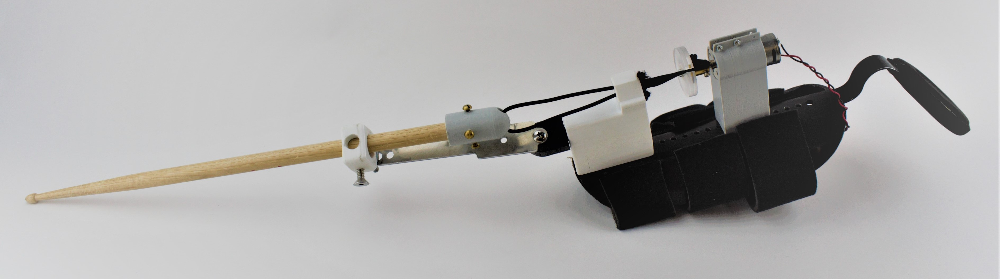

Beyond Hands is a project that is aimed towards creating comfortable, low-cost, and accurate drumming prosthetics for those who have hand differences. Research for recreational prosthetics, such as those for sports and music, has not been an essential topic of discussion for engineers and researchers. As a consequence, there is a limited option of recreational prosthetics in the market. Prosthetics for drummers has been a particularly limited category. The current drumming prosthetics in the market are either too expensive, uncomfortable for the user (causes significant user fatigue), inaccurate, or a combination of these factors.
One major aspect of the project was to differentiate between the single and double stroke that drummers employ while playing. These strokes are normally achieved by changing the stiffness of the user's wrist. A single stroke, which is used to play controlled and rigid notes, is achieved when the user has a tighter grip on the drumstick. A double stroke, which is used to play less controlled and quicker notes, is achieved when the user has a looser grip on the drumstick. To mimic the single and double stroke effects on the prosthetic, adjustments in the variable stiffness of the actuation mechanism are necessary.
The team, consisting of Davide Asnaghi, Lucie Derbier, Elizabeth Gomes, Pooja Rao, Ph.D advisor Tomas Georgiou, Professor Alice Agogino, and myself, set out to create multiple prototypes with the objectives of the prosthetic to be low cost, comfortable, and accurate. The first prototype that was created was a body-powered drumming prosthetic, actuated by the user's shoulders.
Through some user feedback, it was determined that the body-powered prototype was effective in providing immediate user feedback, which made the device very accurate. In addition, the materials used for the prototype were all low-cost. However, because the prototype relied on shoulder actuation, the user experienced considerable fatigue. Therefore, other prototypes were explored. A second design was created using the concept of a linear actuator, which is an electronic linear slider that adjusts the stiffness of the bungee cord element in the prosthetic to ultimately change the damping effects of the drumstick. A ball bearing was also used to decrease the damping of the drumstick and increase rebound distance.
Another prototype was developed using the concept of twisted string actuation. This design consisted of a DC motor, a drumstick holder, bungee cord, and electronic components (microcontroller, Myoware, electrodes, and batteries). The concept behind twisted string actuation is that when the bungee cord twists to a tight conformation, the mechanism becomes stiff, which would correspond to the single stroke, while when unwinded, the mechanism becomes more compliant, which would correspond to the double stroke. This change between twisted and untwisted conformations is achieved by a forearm muscle flex.
